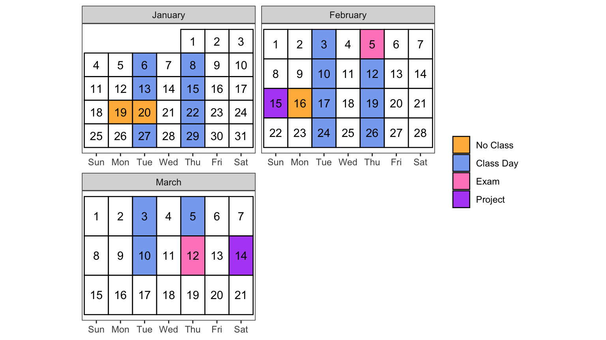
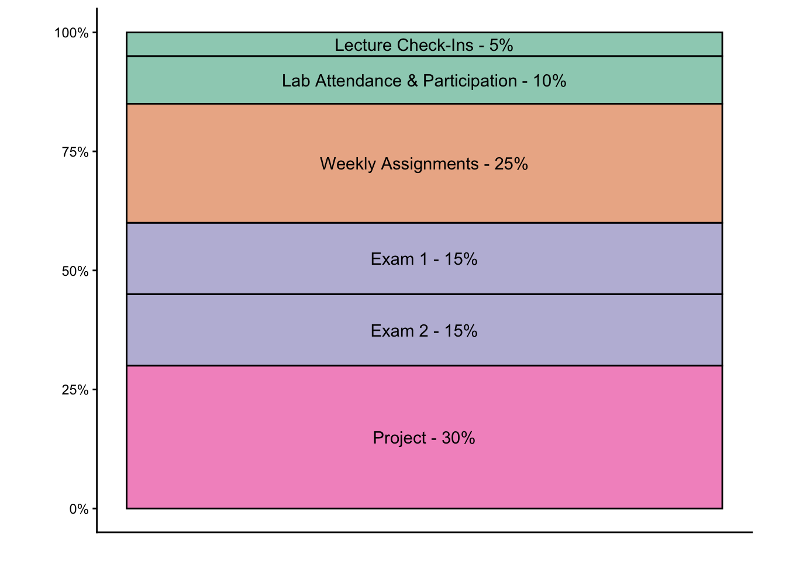

DATA 301: Introduction to Data Science
Winter 2026
Dr. Allison Theobold
- Email: atheobol@calpoly.edu
- Office: Building 25, Office 105

Section 01
- Lecture: 12:10pm - 1:30pm
- Lab: 1:40pm - 3:00pm
Section 02
- Lecture: 3:10pm - 2:30pm
- Lab: 4:40pm - 6:00pm
| Day | Time |
|---|---|
| Mondays, in-person | 1:30 - 3:00pm (drop-in) |
| Wednesdays, in-person | 1:30 - 3:00pm (drop-in) |
Student hours held in-person on Wednesday afternoons. You can find me in my office, but if there’s a lot of people we will likely move to one of the conference rooms in the Statistics Department (I’ll leave a note on my door!).
Course Resources
There is no required textbook for this course; we will use course notes and documents.
Some good extra resources are:
Readings and videos from StatQuest!.
Introduction to Statistical Learning, which can be found free online here: https://www.statlearning.com/
You will need a working laptop to bring to class and lab. If this is a limiting factor for you, please email me privately or speak to me after class, and we will find resources for you.
Canvas will be your resource for the course materials necessary for each week. Each module will walk you through what you are expected to do each week, including:
- lectures slides and check-ins
- optional extra reading
- practice activities
- lab assignments
- project checkpoints
Note
Make sure you are receiving email notifications for announcements in Canvas. In Canvas, click on your name, then Notifications. Check that Canvas is using an email address that you regularly check; you have the option of registering a mobile number. Check the boxes to get notifications for announcements, and optionally other Canvas activity.
This quarter, we will make use of a classwide Discord Server. The link on Canvas will help you join this server. Refer to the Using Discord guide on Canvas for more information on how to effectively use this server.
Joining the Discord is not optional. Important information and discussion will happen here, and sometimes I will share hints and code snippets for activities or assignments.
Note
Discord is also the best way to possibly get your questions answered outside of ordinary class and student hours. While I can’t promise anything, I also often check Discord throughout the day, or on weekends. Don’t hesitate to ping a question, you might catch me feeling helpful - or you might catch a classmate who can help!
Course Description
DATA 301 is an introduction to data science with very few prerequisites. This quarter, you will learn to use Python to perform common data analysis tasks, and you will be introduced to machine learning with scikit-learn. Throughout the course, you will practice drawing conclusions and making predictions from real data. For your final project, you will apply your knowledge to a complex, real-world dataset.
Course Objectives
After taking this course, you will be able to:
- Acquire and process tabular, textual, hierarchical, and geospatial data.
- Uncover patterns by summarizing and visualizing data.
- Apply machine learning to answer real-world prediction problems.
Prerequisites
I expect you to enter this class with:
Basic knowledge of Python and computer programming concepts.
Familiarity with computers and technology (e.g., Internet browsing, word processing, opening/saving files, converting files to PDF format, sending and receiving e-mail, etc.).
A positive attitude, a curious mind, and a respect for ethical use of data science tools.
Class Schedule & Topic Outline
This schedule is tentative and subject to change.
| Date | Topic |
|---|---|
| Jan 6, Jan 8 | Intro; Summaries of tabular data |
| Jan 13, Jan 15 | Multiple variables; Visualization Pt. 1 |
| Jan 22 | Visualization Pt. 2; Distances between observations |
| Jan 27, Jan 29 | Text data; TF-IDF |
| Feb 5 | Exam 1 |
| Feb 3 | Intro to ML |
| Feb 10, Feb 12 | KNN; Model evaluation |
| Feb 15 | Checkpoint: Project Proposal Abstract |
| Feb 17, Feb 19 | Classification; model tuning |
| Feb 24, Feb 26 | Unsupervised learning; Hierarchical data |
| Mar 3, Mar 5 | Combining data |
| Mar 10 | Data Ethics |
| Mar 12 | Exam 2 |
| Mar 14 | Poster Presentation Session |
Assessment
Your grade in DATA 301 will contain the following components:

Classwork Details
Lecture Check-Ins (5%)
Every lecture will be accompanied by a simple “Check-In Quiz” on Canvas. This will ask you to input a few answers covered in lecture, and one short mid-lecture practice exercise. Infinite submissions are allowed without penalty, so there is no reason anyone should not get 100% in this category.
If you miss lecture, you can still complete the Check-Ins on your own time, by midnight the next day.
Lab Attendance and Activities (10%)
Attendance and participation in the lab portion of class is required. Do not take this class if you cannot commit to attending every lecture and every lab.
Swapping Lab Sections
If you cannot make it to your assigned lab, but you can attend another section’s lab on the same day, please e-mail Dr. Theobold to inform them that you wish to swap lab sections. You may do this two times throughout the quarter.
Missing Lab
If you cannot make it to any lab sections that day, you may complete the Colab assignment from lab on your own, and e-mail a PDF to Dr. Theobold by midnight that night (the day you missed class). Dr. Theobold will grade your Colab, and this score will replace your attendance for that day. You may do this two times throughout the quarter.
To allow for emergencies, we will also forgive one absence at the end of the quarter.
Note
I am effectively allowing you to miss / reschedule up to three labs out of 10. If you need to miss more than three, then you will need to retake this course next quarter.
Lab Assignments (25%)
Each week, you will be assigned longer homeworks, which will ask you to analyze a real-world data scenario. These assignments are due every Monday at 5pm. See the Late Work section below for information on extensions or deductions for late submissions.
Exams (15% each)
You will have two in-class exams, in Week 5 and Week 10. These will each cover half of the class material. Except in very extreme unforeseeable circumstances, no alternate exams will be given; please plan to be in class these days.
Project (30%)
At the end of the quarter, you will formally present a poster of your findings on a real-world data question. To ensure that you start thinking about your project early, you are required to submit a 1-page abstract proposal in Week 7.
Policies
Communication
For questions of general interest, such as deadline clarifications or conceptual questions, please use the Class Discord Server. You should check the relevant thread of the server, as well as the syllabus, before reaching out to Dr. Theobold.
Of course, if your question is truly private, such as a grade inquiry or a personal concern, you may email me directly.
Note
If you email me to ask a question that should be public, I will likely ask you to post your question on Discord instead. Please don’t take this personally! It just means that you asked a good question, and I think the rest of the class could benefit from seeing the answer.
Late Work
Late assignments will automatically be docked -10% per day, and will be accepted up to 5-days late.
Deadline Extensions
In case of emergency, you have two deadline “extensions” to use throughout the quarter on any Lab Assignment. This will grant you a 48-hour (2-day) extension.
The rules for these are as follows:
You must request the extension through the Google form linked on Canvas. Any other request (e.g., by email, Discord message, verbally, etc.) does not count unless the Google form is filled out.
The extension must be requested before the deadline has passed (i.e., before Saturday at 11:59pm). I do not grant after-deadline extensions for any reason.
Properly requested extensions are automatically granted; you will not get a confirmation email or message, you will simply see your late penalties disappear at some point.
Note
These deadline extensions are automatic! You don’t have to tell why you need the extension - maybe you have a busy week with other work, maybe you are traveling with a sports team, maybe you partied too hard for your friend’s birthday. It doesn’t matter to me!
The flip side of this, though, is that if you use your deadline extensions early on in the course, and then run into a bigger issues later on, you’re out of luck.
Special cases
Sometimes, issues arise require more time than the auto-extension gives. In general, if something comes up in your life, I always want to find a way to help. Please let me know what your situation is, and we’ll work together to find a good solution.
The most important thing is that you tell me early. As a rule, I do not grant extensions after the deadline.
Note
Of course, in the case of a major crisis, that is truly exceptional and unforeseen, all these rules go out the window. I want you to feel comfortable reaching out to me when you are facing something extra difficult. We’ll figure it out.
Academic Integrity
You are expected to abide by the Cal Poly Code of Conduct at all times.
Plagiarism
You are encouraged to work with other classmates on all but the exam portions of this class. You are also encouraged (realistically, required!) to make use of online resources to accomplish tasks.
When dealing with code, follow these guidelines:
Never copy-paste more than small snippets of code. That is, you might borrow a little three-line function from StackOverflow, but you should not copy over a full analysis you find on Kaggle.
Attribute all code that is not completely your own. If you do borrow that StackOverflow snippet, provide a link to the source. If you reference a similar analysis for ideas, mention that in your description.
Note
A good “rule of thumb” is: If I sat you down by yourself in a room with no internet, could you explain to me roughly what each line of code is doing? If not, you are probably borrowing more than you should from your online source.
(In fact, this is exactly what I will do if I need to investigate possible cheating.)
AI tools
New AI models like ChatGPT offer a whole new world of online coding resources. This is exciting! You should absolutely feel free to get help from these tools, they are excellent at answering questions.
However, from an academic integrity perspective, treat these generative AI resources like, say, a tutor. Asking a tutor to help explain a homework concept to you or help debug your code? Totally fine! Giving the tutor a homework question and having them answer the whole thing? Nope. Talking to a tutor at all, about anything, during the course of the exam? Unacceptable.
Important
To assist you in getting the most out of your conversations with Chat, I have the following guidelines:
- Do not copy and paste any prompts from my assignments
- Do not ask Chat to solve the problem for you
- Tell Chat what you are trying to do and what tools / approaches you’ve tried
- Ask for suggestions on what approaches you might want to take next
- Probe why Chat is suggesting certain methods / tools instead of others
Integrity Violations
If you accidentally forget a small citation, or go a little overboard in how much you “borrow” from StackOverflow, you’ll get a warning.
Following your first warning, if you forget to cite a resource you used in your analysis, you will receive a 0 on that assignment and I will file a academic integrity report with the Office of Student Rights and responsibilities.
The third instance of plagiarism will result in a failing course grade.
Warning
Be careful about being on the giving end as well as the taking end. For example: If you send your finished assignment to a friend, and that friend copies it, you have both been academically dishonest.
Intellectual property
The materials for this course are legally the professor’s intellectual property.
Most class materials are publicly shared, and you are welcome to direct others to this resource at any time. You are also welcome to publicly share any or all of your work on the class project.
Non-public class materials—most importantly, assignment solutions and any exam materials—may never be shared.
Note
This is not just an issue of academic honestly, it is quite literally a legal copyright scenario. Please do not distribute solutions or exam questions from this class anywhere, for any reason. Doing so is a violation of the Code of Conduct, and it may constitute a violation of U.S. copyright law.
Class Conduct
In this classroom, I expect you to be polite, respectful, inclusive, and open-minded.
Some examples of how to be a good classmate include:
Doing your best to avoid language that is ableist, racist, sexist, transphobic, or classist; or that perpetuates harmful stereotypes.
Addressing your classmates (and your professor!) by their preferred name and pronouns.
Doing your best to be aware of your own biases, privileges, and areas of ignorance.
Listening to others’ opinions, and making an effort to understand their perspective.
Taking the time to help your classmates grasp concepts or solve problems, even when you are ready to move on.
Attendance
It is my general expectation that you will attend lecture, and remain present until you have finished the day’s in-class work. However, I do not take formal attendance in class; as long as you engage with the material and complete the small check-ins, you can decide which lectures are useful to you.
Please do not email me letting me know when you are missing class - I don’t need to know if you are attending, it is your responsibility to catch up on the materials and check-ins you miss.